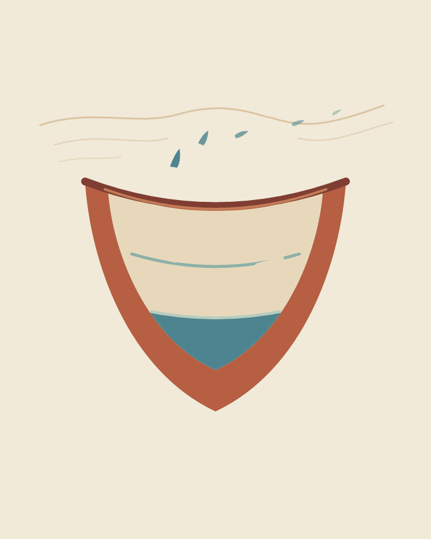

Vyt Aitken | cut-paper image | 15 October 2026

The note for Posht Darb-e Vosta records 35.4 degrees C, 24% humidity, no precipitation, and a light wind. This is an invented vessel and an imagined trace, not a view of the place or a record of its water.
Back to the studio's other work.